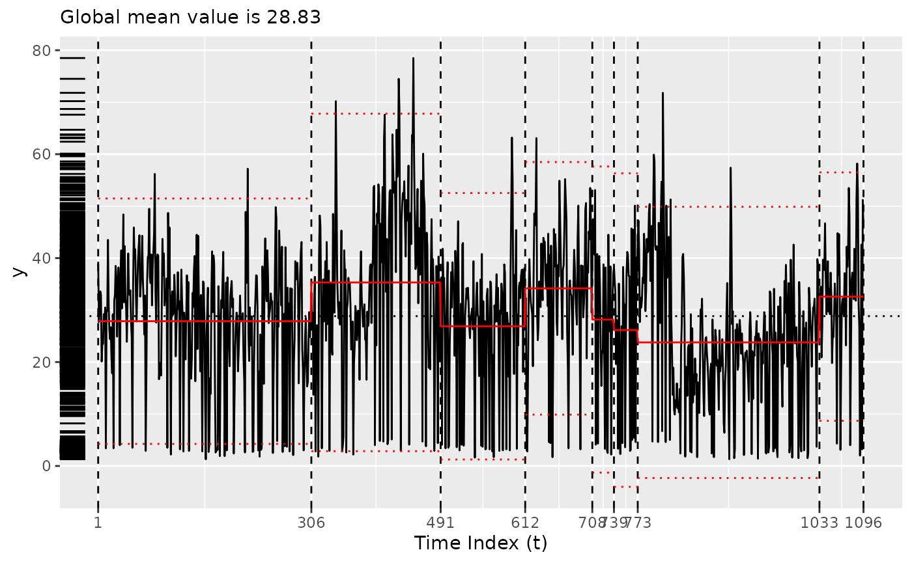

Using Coen's algorithm
coen.RmdPlease see Baumer and Suarez Sierra (2024) for more details.
plot(bogota_pm)
Using the original implementation of Coen’s algorithm
x <- segment(bogota_pm, method = "coen", num_generations = 5)
#> Warning: `segment_coen()` was deprecated in tidychangepoint 0.0.1.
#> ℹ Please use `segment_ga_coen()` instead.
#> ℹ The deprecated feature was likely used in the tidychangepoint package.
#> Please report the issue to the authors.
#> This warning is displayed once every 8 hours.
#> Call `lifecycle::last_lifecycle_warnings()` to see where this warning was
#> generated.
#> | | | 0% | |=============== | 25% | |============================== | 50% | |============================================= | 75% | |============================================================| 100%
changepoints(x)
#> [1] 102 249
plot(x)
Using the GA implementation of Coen’s algorithm
y <- segment(bogota_pm, method = "ga-coen", maxiter = 50, run = 10)
#> Seeding initial population with probability: 0.0145985401459854
changepoints(y)
#> x557
#> 557
plot(y)
diagnose(y$model)
tidy(y)
#> # A tibble: 2 × 12
#> region num_obs min max mean sd begin end param_alpha param_beta
#> <chr> <int> <dbl> <dbl> <dbl> <dbl> <dbl> <dbl> <dbl> <dbl>
#> 1 [0,557) 556 1.3 78.5 30.1 14.3 0 557 0.928 1.06
#> 2 [557,1.1e+… 540 1.3 71.8 27.5 13.9 557 1096 0.529 0.00298
#> # ℹ 2 more variables: logPost <dbl>, logLik <dbl>
glance(y)
#> # A tibble: 1 × 8
#> pkg version algorithm seg_params model_name criteria fitness elapsed_time
#> <chr> <pckg_vrs> <chr> <list> <chr> <chr> <dbl> <drtn>
#> 1 GA 3.2.4 Genetic <list [1]> nhpp BMDL 1964. 21.262 secsChanging the threshold
By default, the threshold is set to the mean of the observed values,
but it can be changed using the model_fn_args argument to
segment().
Please note that the number of iterations (maxiter) of
the genetic algorithm has been set very low here for ease of
compilation. NOTA BENE: To obtain more robust result,
set maxiter to be something much higher. You can also
experiment with the popSize argument to
segment().
z <- segment(
bogota_pm,
method = "ga-coen",
maxiter = 5,
model_fn_args = list(threshold = 50)
)
#> Seeding initial population with probability: 0.0145985401459854
changepoints(z)
#> x103 x283 x636 x690 x767 x833 x839 x1070
#> 103 283 636 690 767 833 839 1070
plot(z)
diagnose(z$model)
tidy(z)
#> # A tibble: 9 × 12
#> region num_obs min max mean sd begin end param_alpha param_beta
#> <chr> <int> <dbl> <dbl> <dbl> <dbl> <dbl> <dbl> <dbl> <dbl>
#> 1 [0,103) 102 2.9 56.2 31.9 10.4 0 103 0.158 0.160
#> 2 [103,283) 180 1.3 57.2 25.7 12.6 103 283 0.228 0.0895
#> 3 [283,636) 353 1.6 78.5 31.7 15.4 283 636 0.528 0.0835
#> 4 [636,690) 54 1.7 55.2 34.5 12.1 636 690 0.510 0.0824
#> 5 [690,767) 77 2.2 53.5 29.0 14.7 690 767 0.457 0.0814
#> 6 [767,833) 66 4.6 71.8 33.5 16.5 767 833 0.571 0.0800
#> 7 [833,839) 6 2.4 40.8 24.7 14.9 833 839 0.407 0.0836
#> 8 [839,1.07e… 231 1.3 57.4 22.3 10.9 839 1070 0.299 0.0847
#> 9 [1.07e+03,… 27 2 58.2 34.8 15.3 1070 1096 0.613 0.0785
#> # ℹ 2 more variables: logPost <dbl>, logLik <dbl>
glance(z)
#> # A tibble: 1 × 8
#> pkg version algorithm seg_params model_name criteria fitness elapsed_time
#> <chr> <pckg_vrs> <chr> <list> <chr> <chr> <dbl> <drtn>
#> 1 GA 3.2.4 Genetic <list [1]> nhpp BMDL 658. 5.094 secs
Baumer, Benjamin S., and Biviana Marcela Suarez Sierra. 2024.
“Tidychangepoint: A Unified Framework for Analyzing Changepoint
Detection in Univariate Time Series.” https://beanumber.github.io/changepoint-paper/.